2020（R2）8月29～31日 佐賀めぐり（熊の川温泉・古湯温泉）
朝早く起きて、勇んで青春１８で西下を始めたら、いきなり人身事故でストップ。まだ６時台やで・・・。ついてない旅のスタート
でしたが、福岡で出会ったおじさんに、激安ラーメン屋や中州の屋台に連れて行ってもらって、少し機嫌が直りました。
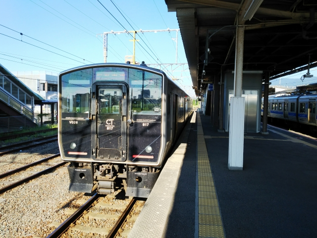
ここは肥前山口。今日は、まずは重要伝統的建造
物群保存地区に指定されてる肥前浜に向かいます。
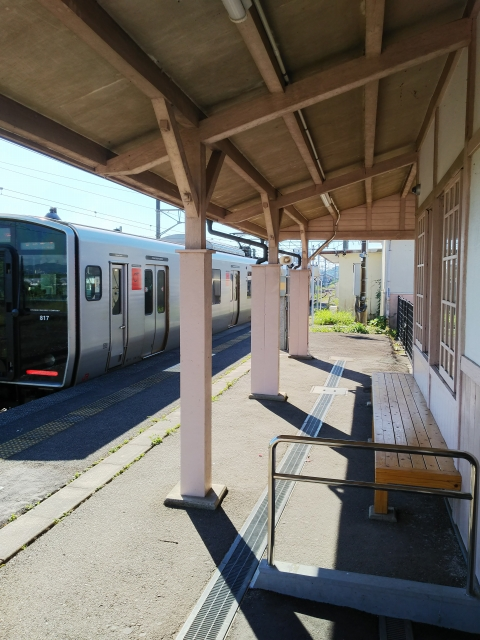
肥前浜駅に到着。
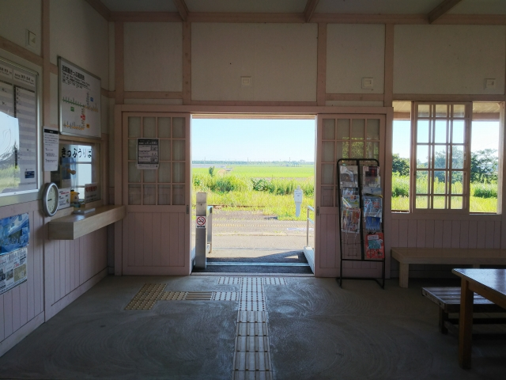
駅名の通り、海に近いところです。
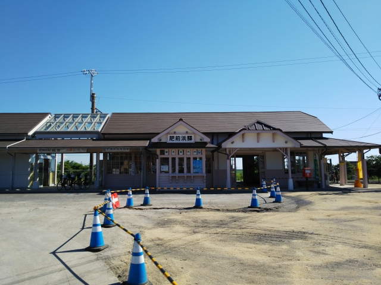
整備中やね。観光地化を狙ってるみたいです。
重要伝統的建造物群保存地区は歩いて５分ほどです。
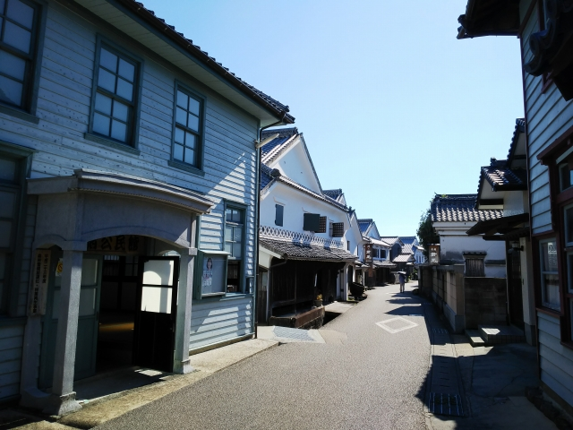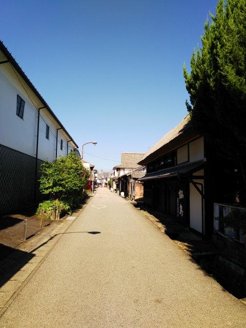
こちらは肥前浜宿酒蔵通りです。酒蔵を中心として、いい街並みが広がってます。
年に一度、３００年以上の歴史のあるふな市というフナを売る市がたつそうです。
（ふな市の様子はこちら）
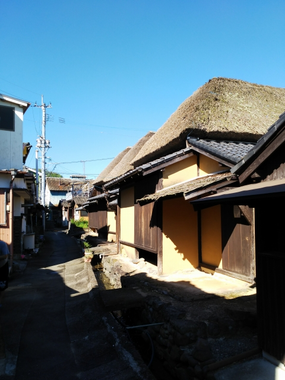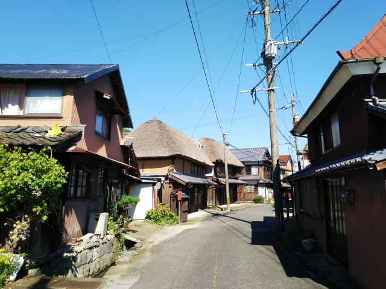
酒蔵通りから５分ほど歩くと、茅葺の街並みが現れます。ほとんど復元なのがちと残念。
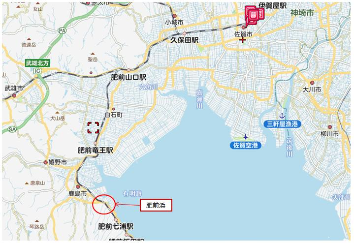
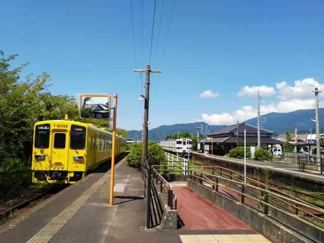
次に向かうのは、男はつらいよ第42作「僕の伯父さ
ん」のロケ地の小城です。
小城駅に到着。駅舎はきれいになってるなぁ。
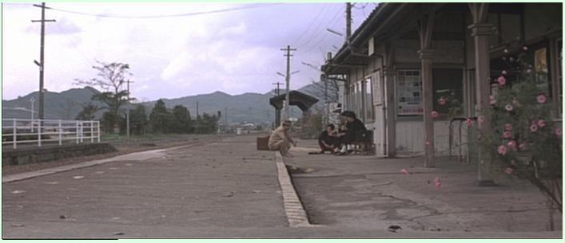
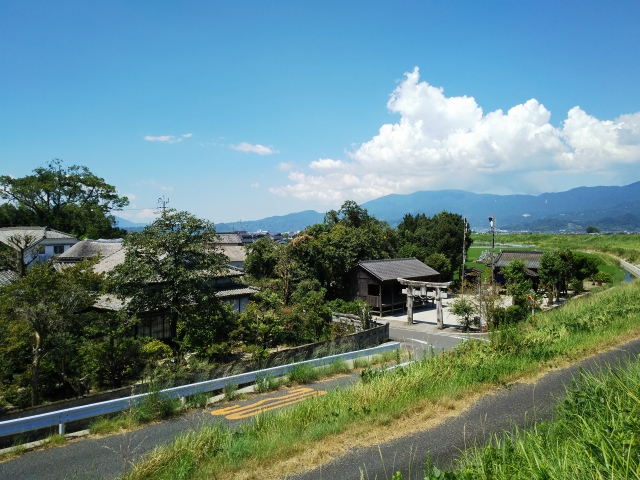
駅の近くでレンタサイクルを借りようとしてひと悶
着あったけど、なんとか借りて山王神社へ。
ここは泉ちゃんが暮らす伯父の家があって、満男が
バイクに乗って会いにいったところです。
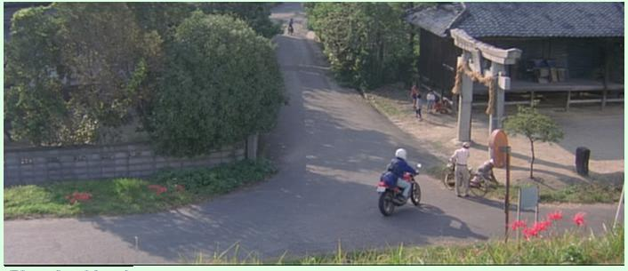
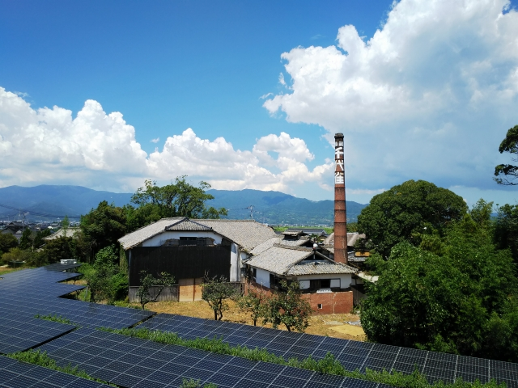
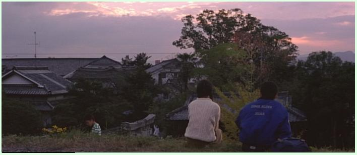
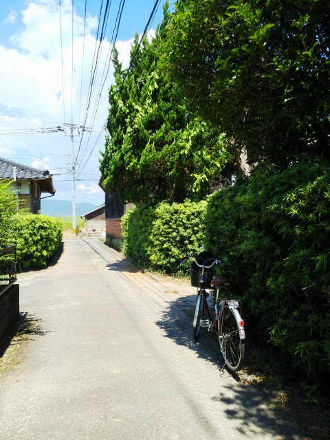
しかし、あまりの暑さで、このあたりでスマホのカ
メラが動かなくなりました。とほほ・・・
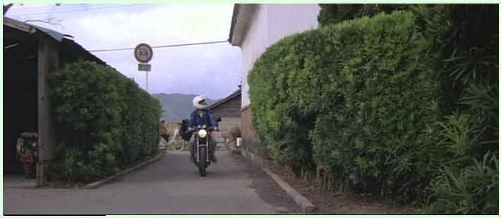
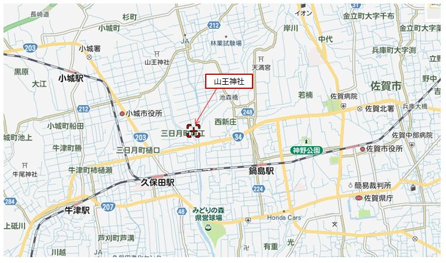
そして、駅に戻る時に悲劇がっ
！。
なんと、後輪がパンク・・・
ここまで自転車で３０分ぐらい
かかったっちゅーのに、まだ残
り半分ぐらいの地点でパンクし
て、顔ひきつってたと思う。だ
ましダマしゆっくり乗って、最
後は貸し主（役所でよかった）
に泣きついて、駅まで来てもら
いました。
この状況とあまりの暑さで熱中
症寸前に・・・
駅のそばのコンビニに駆け込ん
で、座りこんだがな。店員にめ
っちゃ冷たい目で見られてたと
思う。
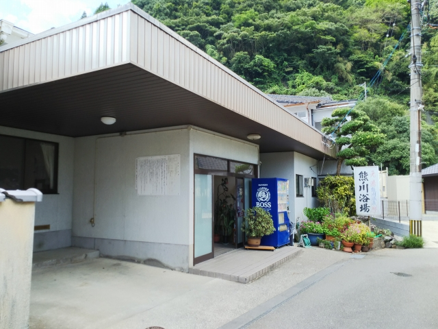
本日最後の目的地の温泉２湯へ。
どちらの温泉も佐賀駅からの同じ路線です。
少し時間があったので、駅から佐賀城まで歩いてみ
ました。
ただ、思ったより遠くて、堀まで着いたら時間切れ。
堀端からバスに乗りました。
熊の川温泉はぬる湯で、夏には最高でした。
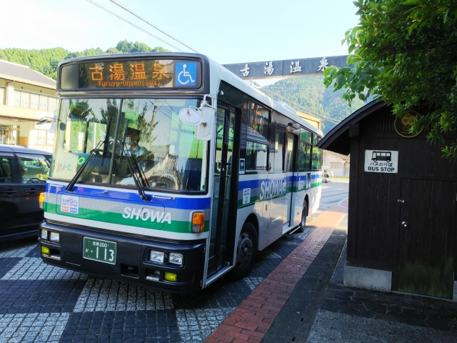
古湯温泉に到着。
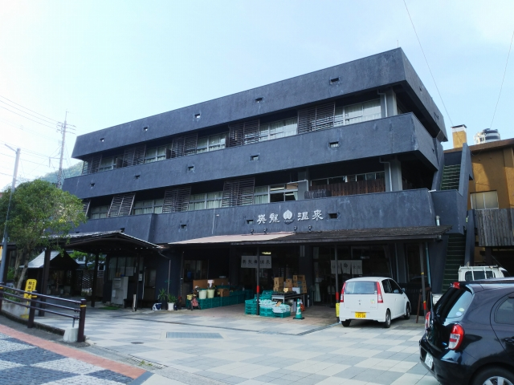
共同浴場は、っぽくないのですが、どうも改修して
るみたい。
入ってみると、中は昔ながらでした。
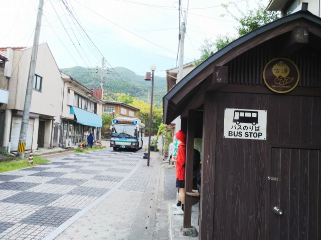
風呂上り、アイスキャンディーを食べて、佐賀駅に
戻ります。夏温泉の楽しみやね。たまりまへん。
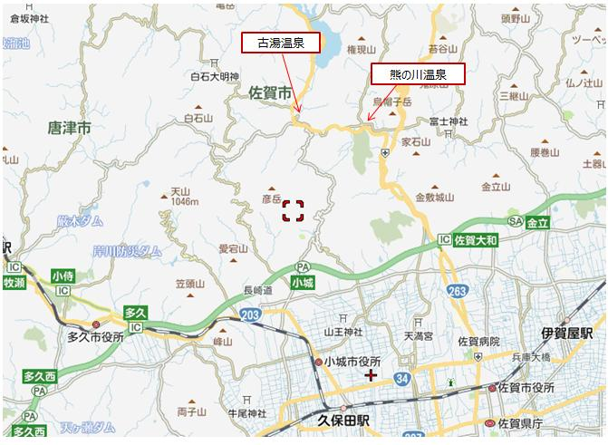
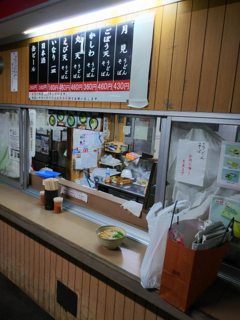
本日は黒崎のホテル泊。途中、鳥栖の駅そばでうど
んをいただきました。
翌日、朝から鈍行で一日かけて帰ったことは言うま
でもありません・・・